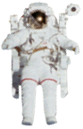

登月舱
LUNAR MODULE
一所基于兴趣实践的未来高中

最好的学习体验
发生在探索自己热爱的事情当中
重新 定义学校
建所 未来高中
全新学习生态
线下 未来学习空间
&线上 APP
未来学习空间
散布于城市中的高中生创新协作空间
推倒围墙
社会即学校
生活即学习
在这里，你可以
遇见有趣的人
做共同热爱的事情
探索不一样的学习生活
LUNAR MODULE
一个基于兴趣实践的自适应学习社区
连接一切能获取知识与技能的
人与世界的个性化交互
开发团队正在努力,敬请期待...
成立背景
未来的高度不确定性将会迫使人们
不断地重新定义自身
以适应社会对人才需求的巨大变革
辅助人们适应社会的基础
——现代教育体制，已失去其实效性。
我们相信教育的本质目的有两点：
满足社会需求
以及辅助学习者自我实现
从这两个角度出发，同时依托前沿的学习理论、
科学技术与设计理念
登月舱希望建立适于未来社会的全新学习生态。
这就是我们存在的原因。
探月者们
国内体验式学习先行者
境外风投退出者
认知神经科学家
美国顶尖大学理事会理事
以及95后的创始人…
这是一只跨界极广
却全身心投入到同一件事的团队
将我们聚在一起的是同一种面对生命的态度——“探索主义”（explorism）： “对事物的本质深入思考，也勇于踏入未知的冒险；对热衷的事情无比执着，也拥有强大的适应能力。”
探索、学习、高效、以人为本——这是探月者们的特征。
登月舱不惜一切地建立这样的团队以及相应的管理方式，绝不在于它看起来更酷或者更人性化，而在于我们坚信企业的灵活性与适应能力，是面对高度不确定未来的核心竞争力。
一起探月
工作，在舱里
在这里，登月舱尽可能地为每个成员
提供优质与舒适的工作条件。
因为学习（教育）这件事情对人类有多重要
就需要吸引多有潜力的人来为这件事情服务。
We are hiring
设计师、工程师以及运营者